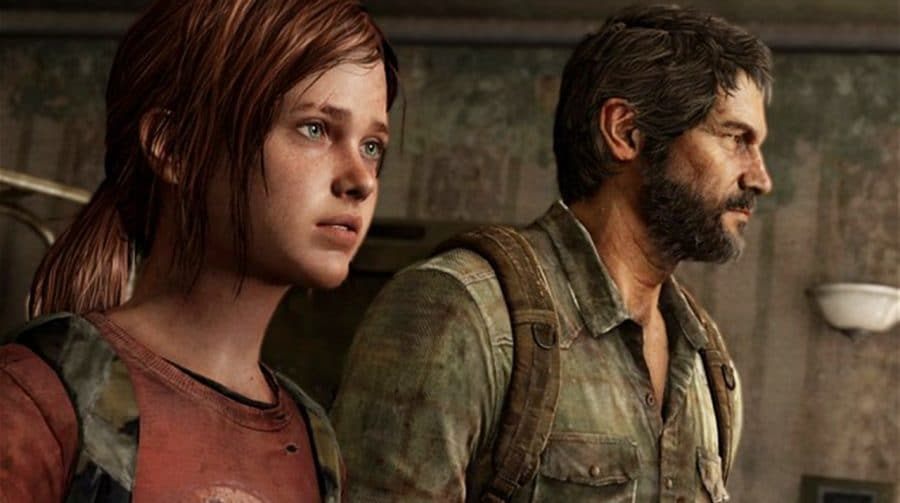
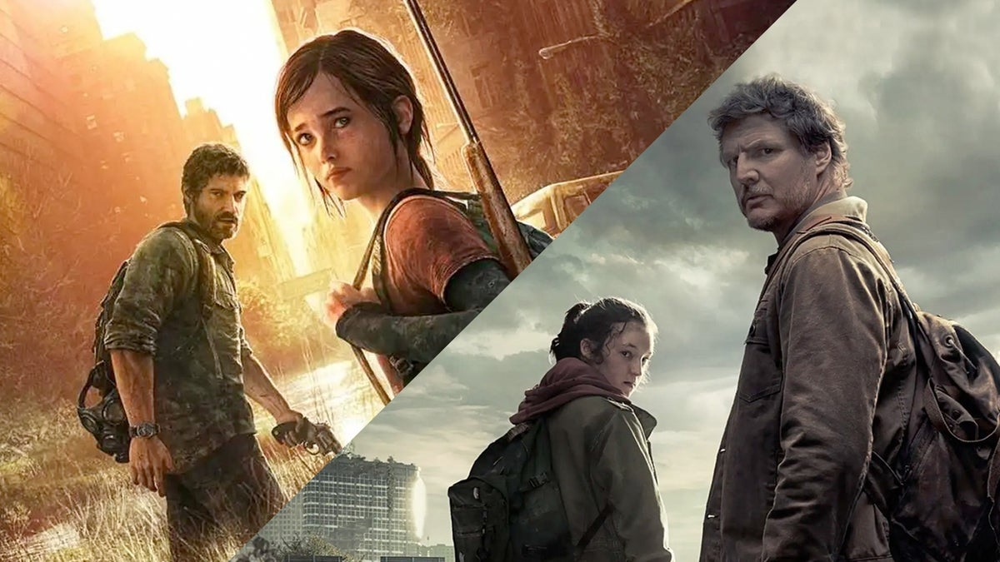
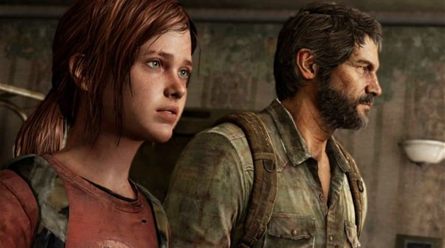
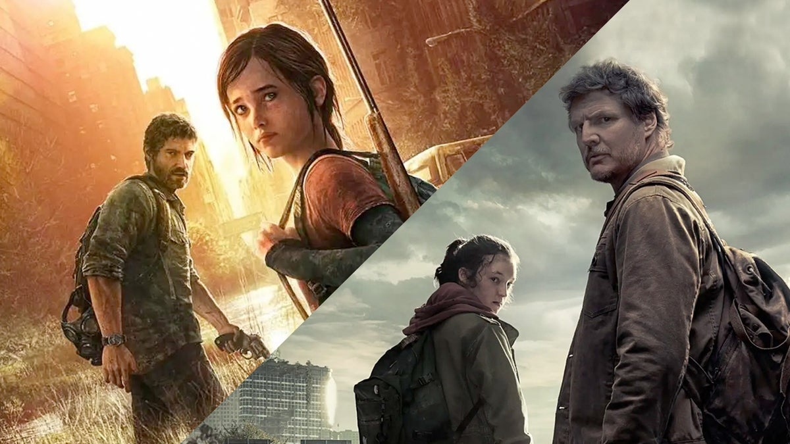

The Last of Us é uma série distópica da HBO baseada na franquia de jogos de videogame de mesmo nome criada por Neil Druckmann. O drama narra um futuro pandêmico que foi devastador para humanidade, deixando os seres humanos à beira da extinção.Um surto de uma mutação do fungo Cordyceps arrasa os Estados Unidos em setembro de 2013, transformando seus hospedeiros humanos em monstros canibalísticos chamados de Infectados. Joel foge do caos dos subúrbios de Austin, Texas, junto com seu irmão Tommy e sua filha Sarah.